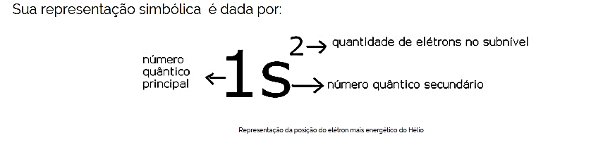

CAPÍTULO 2 - SPIN
2.1 O Conceito de Spin
O que é Spin? É uma grandeza vetorial, pois apresenta módulo, direção e sentido, sendo uma propriedade quântica intrínseca das partículas elementares, assim como massa e carga. Todas as partículas, como prótons, elétrons, dentre outras, possuem spin, entretanto, não pode apresentar quaisquer valores para o módulo do spin das partículas, porque é uma grandeza quantizada e sendo assim, não existe nenhuma analogia para a física clássica. O spin é uma espécie de orientação da partícula quando imersa num campo magnético.
A palavra spin significa “rotação” em português, mas apesar do significado, não é a realidade que acontece com as partículas do mundo quântico, pois as partículas não ficam em rotação, elas não têm tamanho definido (HELERBROCK, 2021).
O spin do elétron surge na teoria quântica de Paul Dirac (1902-1984), em 1929, mas já havia sido verificada experimentalmente por Stern e Gerlach em 1922. A existência do spin e do momento angular orbital são as origens microscópicas do magnetismo dos materiais (KANEKO, 2017).
Feynman (1918-1988), considera que ao colocarmos a mão comprimindo a mesa, exercendo uma força na mão, estaremos nos dando conta da existência do spin. Teremos a força normal, sendo o resultado do contado com a mesa, resultado do direcionamento do spin. Um outro detalhe interessante é a impenetrabilidade da matéria, ou seja, não conseguimos ultrapassar a nossa mão pela mesa, não conseguiremos penetrar a mesa. Isso tudo se dá pelo fato do spin, devido a repulsão dos átomos da mão e da mesa, ou seja, tipicamente o spin dos elétrons.
Outro fato também interessante é o spin do fóton “partícula da luz”, pois a melhor evidência é que a luz exibe a polarização, consequência do spin do fóton.
Os imãs, por exemplo, é uma forma de magnetismo da matéria, pois apresenta os polos norte e sul, atraindo ou repelindo, dependendo da polaridade, tudo isso resultando do spin, pois o imã é um material ferromagnético e dentro dele, os spins se orientam numa determinada direção.
O spin é responsável pela estabilidade dos fenômenos, por exemplo, a força gravitacional da Terra, está constantemente atraindo os átomos para o centro, e como dito anteriormente, a força dos átomos do spin, consegue evitar o colapso gravitacional, por isso a responsabilidade do spin pela estabilidade dos fenômenos (MARQUES, 2016).
2.2 Números Quânticos
Para entender o funcionamento do spin é interessante lembramos dos números quânticos. Os elétrons são caracterizados pela energia e para analisarmos essa energia, temos alguns conceitos interessantes. Como vimos no capítulo anterior sobre a transição do elétron nos níveis de energia, então para o tratamento da dinâmica do elétron, temos os números quânticos, que são quatro. Temos o principal (n), o secundário ou azimutal (ℓ), o magnético (m) e o spin (s).
O elétron pode ser encontrado ao redor do núcleo do átomo com probabilidade máxima numa região chamada orbital, ou seja, uma região ao redor do núcleo. Os números quânticos são códigos matemáticos associados à energia do elétron (BATISTA, c2021a).
De acordo com o modelo de Pauling, a eletrosfera está dividida em 7 camadas eletrônicas ao redor do núcleo atômico, com quantidade permitida conforme tabela abaixo (BATISTA, c2021b).
O número quântico principal (n), indica a camada ou nível de energia (K, L, M, N, O, P, Q), onde o elétron poderá ser encontrado, variando de 1 a 7. No nível secundário ou azimutal (ℓ) representa os subníveis de energia (s, p, d, f), respectivamente, 0, 1, 2, 3. É como se uma camada fosse um armário e os subníveis, as gavetas do armário (BATISTA, c2021a).
Mas como proceder na contagem da distribuição eletrônica? A contagem se dá seguindo o direcionamento de cima para baixo diagonalmente conforme figura abaixo.
Observando a figura 9, o número quântico representa as sete “escadas” e o número quântico secundário é representado pelos “degraus” das escadas.
O número quântico magnético (m ou ml), indica a orientação dos orbitais do espaço. De acordo com a tabela, representam os quadrados, variando de - ℓ a +ℓ.
Para o número quântico de spin (s ou sl), um orbital comportará no máximo dois elétrons, não se repelindo devido a girarem em sentidos opostos, criando campos magnéticos se atraindo. A magnética atrai e a elétrica faz a repulsão, por isso permanecendo equilibrados (FOGAÇA, 2021).
Por exemplo, o elemento Hélio, possui 2 elétrons e 1 nível de energia. Seu símbolo é 2𝐻𝑒. No caso terá somente um quadrado com dois elétrons de spin para cima e outro pra baixo.
E sua representação simbólica é dada pela figura abaixo.

Então, os números quânticos do 1º elétron, n = 1, ℓ = 0, m = 0 e s = +1/2. Para o 2º elétron, temos, n = 1, ℓ = 0, m = 0 e s = -1/2.
Por exemplo, se tivermos os números quânticos na forma, n = 5, ℓ = 2, m = +1 e s = -1/2. Qual é a representação desta configuração eletrônica? Como o n = 5, então ficou fácil observar que o número quântico principal é 5. Se ℓ = 2, então as caixas para os spins do elétron, teremos para -2, -1, 0, +1, +2, então temos 5 caixas. Como m depende de ℓ, então, parou no +1, e temos que preencher todas as caixas com os spins para depois colocar ao lado. Se padronizarmos o spin para cima como sendo positivo, então iremos preencher todos eles primeiramente para cima e depois, voltamos iniciando a casa, até parar no valor de m.
Temos que preencher todos os quadrados primeiramente com spin positivo até fechar, conforme a posição do número quântico m. Como o spin é -1/2, então temos seta para baixo, então a forma final em geral, conforme a figura anterior, analisando o azimutal ℓ, que nada mais é do que (s, p, d, f), ou seja (0, 1, 2, 3), se ℓ é 2, então temos d. No final 5d. Como a numeração dos spins termina em m = +1, daremos um total de 9 elétrons. Então a resposta final é 5d9 .
E no caso dos quatro números quânticos do elétron mais energético do átomo do elemento Ferro (Z= 26)? Neste caso, devemos realizar a distribuição eletrônica no diagrama de Pauling.
Observamos que o último subnível preenchido foi o 3d, então possui o número quântico principal igual a n = 3. O secundário é ℓ = 2. No caso para descobrirmos o número quântico magnético e o spin é necessário representarmos graficamente.
Logo, observamos que o número quântico magnético é m = -2 e o do spin é s = -1/2. Se padronizarmos o spin positivo para cima.
2.3 As Projeções do Spin
O spin é uma orientação da partícula, em que falaremos mais adiante no exemplo do experimento de Stern-Gerlach. As partículas estão orientadas para cima ou para baixo. Como o spin é quantizado, ele naturalmente está relacionado com a constante de Planck reduzida, e no caso do elétron, por exemplo, as componentes do spin eletrônico podem assumir dois valores:
Sz=+- h/2
Onde 𝑆𝑧 , representa a projeção do spin no eixo z. O spin é que faz do elétron um pequeno imã, com momento de dipolo magnético associado ao spin, pois cada elétron gera campo magnético (MARQUES, 2017).
Quando o spin apresenta módulo positivo, é chamado de spin up (para cima) e quando apresenta sinal negativo, é chamado de spin down (para baixo) (HELERBROCK, 2021).
No regime quântico, o spin é quantizado, onde é caracterizado por um número quântico s, assumindo valores inteiros ou semi-inteiros. A projeção do spin sobre um eixo qualquer pode assumir 2s + 1 valores, variando de -s a +s (BETZ, s.d).
Se utilizarmos a equação (1.4), temos o momento angular de uma partícula, que no modelo de Bohr é quantizada (MUNHOZ, 2018).
O próprio movimento do elétron em torno do núcleo também é quantizado, a energia é determinada pela distância da órbita ao núcleo e essas distâncias são quantizadas. Uma outra característica importante é a inclinação da órbita. Será que qualquer inclinação da órbita do elétron é possível ou existe limitação para isso? Respondendo pela física clássica, sim, seria possível qualquer inclinação, mas no mundo quântico, existem inclinações permitidas para a órbita do elétron (LOSS, 2020a).
Partindo do eixo horizontal sendo 0º de inclinação, para o elétron, temos somente 45º de inclinação para cima e 45º de inclinação para baixo.
2.4 O Experimento de Stern e Gerlach
Com relação às orbitas do elétron (que na verdade é densidade de probabilidade no regime quântico), para efeito de entendimento, falamos em órbitas e a pergunta é: como as órbitas do elétron se comportam? De forma quantizada ou clássica? A resposta se dá no experimento proposto por Otto Stern (1888-1969) e executado por Walther Gerlach (1888-1979).
No caso do elétron, o número quântico do spin é s = 1/2. Então ao observar um campo magnético, o sentido Norte do campo é s = +1/2 e o sentido Sul do campo é s = -1/2, respeitando a inclinação possível do elétron. Por isso também é conhecido como número quântico magnético (VIANA, 2018).
No caso do elétron, o número quântico do spin é s = 1/2. Então ao observar um campo magnético, o sentido Norte do campo é s = +1/2 e o sentido Sul do campo é s = -1/2, respeitando a inclinação possível do elétron. Por isso também é conhecido como número quântico magnético (VIANA, 2018).
O objetivo do experimento de Stern-Gerlach é de lançar vários átomos através de um campo magnético não uniforme, gerado por dois elétrons ímãs, que iriam desviar os átomos de acordo com a direção do campo magnético. Para cada direção possível, ele iria desviar o átomo e se a inclinação da órbita não fosse quantizada, o resultado seria uma mancha contínua. Mas o resultado foi de duas manchas separadas. Como o átomo que estava sendo utilizado no experimento era o átomo de Prata (Ag), onde o campo eletromagnético desse átomo era determinado por um único elétron na órbita mais distante do núcleo, ou seja, esse único elétron era responsável pelas duas manchas.
Mas qual a relação do campo magnético com o spin? A partícula de massa M e carga q, descreve um movimento circular e possui um momento magnético μ proporcional ao momento angular L, na forma
Onde as órbitas atômicas são mais estáveis quando possui dois elétrons sendo um com spin para cima e outro com spin para baixo. Não conseguiremos obter átomos com um par de elétrons de spin up, ou spin down, ou seja, dois para cima, ou dois para baixo, o que também não conseguiremos colocar três elétrons juntos. Essa regra é obedecida pelo chamado Princípio da Exclusão de Pauli. (LOSS, 2020a).
O Princípio da Exclusão de Pauli diz que em um átomo, dois elétrons não podem existir em um mesmo estado quântico (VIANA, 2018).
Os números dos spins vão depender de qual partícula se trata e de acordo com o Modelo Padrão, as partículas são classificadas em férmions e bósons. O Modelo Padrão é o estudo da Física das partículas elementares e trata de toda estrutura dessas partículas. No caso dos férmions, temos spins semi-inteiros, por exemplo, s = ± 1 2 , ± 3 2 , ± 5 2 e assim por diante. No caso do elétron o spin é s = ± 1 2 .
Para o caso dos bósons, os spins são números inteiros. Por exemplo, o núcleo do átomo de Hélio, tem sempre spin zero, ou seja, não possui nenhum campo magnético. Já no caso do Bóson Z, tem spin total 1, com três valores possíveis, -1, 0 e 1. Spin 1, o norte da partícula aponta para cima, spin -1, o norte da partícula aponta para baixo e com spin zero, não temos campo magnético, por exemplo no caso da partícula chamada Bóson de Higgs.
Os bósons não se comportam como os férmions e por isso não obedecem ao Princípio da Exclusão de Pauli (LOSS, 2020a).
Os bósons que são partículas bosônicas, são partículas mediadoras, ou seja, partículas portadoras de força, pois o spin gera força (NAVARRA, 2020).
Mas como se dá a notação do spin? Por exemplo, uma partícula a, e uma partícula b. Teremos as seguintes projeções do spin total na direção z (eixo vertical). Como somente existem duas possibilidades do spin para cima ou para baixo, então as duas partículas são da forma, conforme a figura abaixo:
Lembrando que o spin na representação da figura acima, são de partículas diferentes e não de dois elétrons no mesmo orbital.
No caso do próton é constituído por dois quarks up (u) e um quark down (d). Então 2u + d = p. Qual é o valor do spin do próton? Temos que, o spin u = +1/2, e o spin d = -1/2. Então, temos p = u + u + d, p = 1/2 + 1/2 -1/2 = 1/2. Logo o spin do próton é 1/2 (NAVARRA, 2020).
2.5 Estudo do Spin 1/2
Na mecânica clássica, temos o momento angular orbital L e o momento angular de spin S. O movimento angular orbital está associado ao movimento do centro de massa de um corpo rígido, por exemplo o planeta Terra, possui um momento angular orbital associado ao seu movimento de translação em torno do Sol, ou seja, quando ela dá uma volta completa em torno do Sol, que seria o período de um ano.
No caso do spin, o seu movimento se associa em volta do centro de massa, ou seja, rotaciona com seu próprio eixo que no caso do planeta Terra, é quando ela gira em torno de si mesma, o que seria o período de um dia. O spin nada mais é do que o somatório do momento angular orbital de todos os componentes da Terra.
De maneira análoga, acontece no regime quântico, mas como as partículas elementares são tratadas de forma pontual, não podemos tratar as análises das partes de suas estruturas como se fossem um corpo rígido. O spin é um momento angular intrínseco (GOICOCHEA, 2014).
No caso do momento angular orbital L, temos em suas projeções L2, Lx, Ly e Lz, com L+ e para cima ou L- pra baixo. Na representação quantizada, fica na forma
Da mesma forma para o spin S, temos em suas projeções S2, Sx, Sy e Sz, com S+ e pra cima ou S- pra baixo. Na representação quantizada, fica na forma
Com autoestado S2 = ℏ^2 s(s+1), Sz = ℏm e S_± ├ ├|S,m┤⟩ =ℏ√(s(s+1)-m(m±1)) ├ ├|S,(m±1)┤⟩, onde s = 0, 1/2, 1, 3/2,... e m = -s, -s+1, ..., s-1, s. Ao analisarmos o caso do spin 1/2 ficará fácil estudar spins maiores. No momento angular orbital tratamos de autofunção e no caso do spin, será autoestado. A representação desse autoestado é da forma
Podemos representar numa base ortogonal na forma
E expressando num sistema de coordenadas em duas dimensões, conforme a figura abaixo, temos
E o que fazer com S2, Sx, Sy e Sz, S+ e S-? χ_+ e χ_- são autoestados. Começando com S2, teremos

Para χ_+, essa expressão fica na forma
Para χ_-, essa expressão fica na forma
Na forma matricial, temos
Para o Sz, temos
Em forma de matriz, temos
Como
temos
Para o caso de Sx, Sy podemos fazer com S+ e S-, através da Eq. (2.4). partimos primeiramente calculando S+ e S-, então encontraremos Sx, Sy. Como proceder? Temos que fazer as relações S_+ χ_+, S_+ χ_-, S_- χ_+ e S_- χ_-. As relações com sinais iguais dão zero, então S_+ χ_+=S_- χ_-=0.
Vamos ao caso S_+ χ_-, temos χ_-, com S=1/2 e m=-1/2. Então, fica na forma
Vamos ao caso S_- χ_+. Temos χ_+, com S=1/2 e m=1/2. Então, temos que
E se colocarmos S_+ χ_+ ou S_- χ_-? Como dito anteriormente, daria zero. Vamos provar essa expressão. Para S_+ χ_+, segue o princípio da Eq. (2.20), com S=1/2 e m=1/2. Então, temos que
2.6 Momento Angular Total
No caso do momento angular orbital, como ℓ é o número quântico do momento angular orbital, então representa o valor do módulo do momento angular do elétron no átomo, na forma

De maneira análoga a quantização do momento angular, para o momento angular de spin 𝑆⃗, temos s o número quântico do spin, ficando na forma
Tendo em vista a existência desse momento angular intrínseco e sua interação spin-órbita, o comportamento do momento angular orbital dependerá do comportamento do spin e vice-versa, mas pode-se simplificar na consideração do momento angular total, pois apresenta um comportamento mais simples (MUNHOZ, 2018).
No caso de átomo com mais de um elétron, definimos como momento angular total 𝐽⃗, sendo o somatório do momento angular L e spin S, (SEIDEL, 2017) passando para a forma
Na forma simples temos J = L + S. Onde J é a soma vetorial de L e S, é dado na forma
Em que j é o número quântico do momento angular total, j = ℓ − 𝑠 ou j = |ℓ − 𝑠|. (TIPLER; LLEWELLYN, 2017).
2.7 Vídeo Sobre o Spin
O que é o spin?
O vídeo mostra de forma introdutória o conceito, experimento e a natureza das partículas para o spin.
2.8 Exercícios de Fixação do Capítulo 2
1. O que você entende por Spin?
2. Considere os números quânticos na forma, n = 3, ℓ = 1, m = -1 e s = -1/2. Qual é a representação desta configuração eletrônica?
3. Mostre os quatros números quânticos do elétron mais energético do átomo Nitrogênio (N=7).
4. Considere o estado X = aX+ + bX-, com a=1/2 e b=3/2. Ao prepararmos um feixe com 100 elétrons e passarmos esse feixe pelo aparato SG na direção z, quantos deles irão defletir para cima? E quantos irão defletir para baixo?
5. Considerando o momento angular total j = j(j+1)h, qual a opção descreve o momento angular total J, com spin j=3/2?
2.9 Tabela Periódica
2.10 Experimento sobre a precessão do spin 1/2
A precessão de spin é a probabilidade de medir um determinado componente de spin em determinado tempo e nesta simulação, enviamos partículas de spin 1/2 por meio de dois aparelhos Stern-Gerlach (SGAs), que consiste num campo magnético alinhado a um determinado eixo. As partículas se separam em dois fluxos discretos, uma com componente de spin + ℏ/2 para cima (spin-up) e outra para baixo -ℏ/2 (spin-down) ao longo desse eixo (eixo x, ou eixo z).
As partículas passam por dois SGAs subsequentes que podem ser girados em conjunto. Todas as partículas que passam pelo primeiro (SGA 1), passam pelo segundo (SGA 2) com a mesma deflexão.
O experimento pode ser encontrado no site: https://www.st-andrews.ac.uk/physics/quvis/simulations_html5/sims/spin-precession/spin-precession.html.
Procedimento
Para começar a simulação, clique em controles (controls) para enviar partículas, podendo modificar a angulação do campo magnético e dos SGAs.
Na coluna da esquerda, temos os ícones (Block +) e (Block -) “quadras”. Isso significa que é onde iremos detectar a partícula mais acima ou mais abaixo do eixo x ou z. Percebe-se que o quadro de coordenadas está do lado direito do (SGA 2). Você pode escolher ou Bloco + ou -, fazer a alteração angular do campo magnético de 0º a 360º e dos ângulos dos SGAs de 0º a 90º.
Abaixo dos ícones Block, temos os controles principais (main controls), onde você pode enviar clicando somente uma única partícula, um feixe contínuo de partículas ou a cada 100 partículas.
Na coluna central temos o número de medições (SGA 2), mostrando as medidas totais e o resultado de cada eixo do spin (+) ou spin (-) da direção x ou z, dependendo da configuração.
Abaixo do item número de medições (SGA 2), temos o valor esperado de spin (S) como vetor, onde mostra a projeção do spin na coordenada tridimensional (x, y, z).
Na coluna mais a direita, temos o item probabilidades (SGA 2), onde mostra a observação teórica da configuração ajustada para determinado eixo.
E finalmente abaixo do item probabilidades (SGA 2), temos o histograma de probabilidade (SGA 2), mostrando o gráfico do spin (+) ou (-) com sua probabilidade. Neste mesmo painel temos o botão (clear measurements) para apagar todas as medidas e fazer nova medição.
No item challenges (desafios), o aluno-pesquisador deverá pesquisar, através das medidas do experimento e identificar mostrando os resultados obtidos para o professor de maneira correta as seguintes propostas de atividades:
1. Qual o ângulo do campo magnético e o ângulo dos SGAs em que apenas as partículas desviadas na direção + x, passem pelo SGA 1 e todas as partículas são desviadas na direção – x, após passarem pela SGA 2.
2. Qual o ângulo do campo magnético e o ângulo dos SGAs em que apenas as partículas defletidas na direção + x, passem pelo SGA 1 e em média, metade das partículas são defletidas nas direções + x e – x, após passarem pela SGA 2.
3. Qual o ângulo do campo magnético e o ângulo dos SGAs em que apenas as partículas defletidas na direção θ = + 45º, passem pelo SGA 1 e tantas partículas quanto possível são desviadas na direção – 45º, após passarem pela SGA 2.
4. Qual o ângulo do SGA 1, podemos fazer com que todas as partículas que passem pelos SGAs mudem de um auto-estado de spin-up para spin-down dado o campo magnético alinhado com o eixo z?